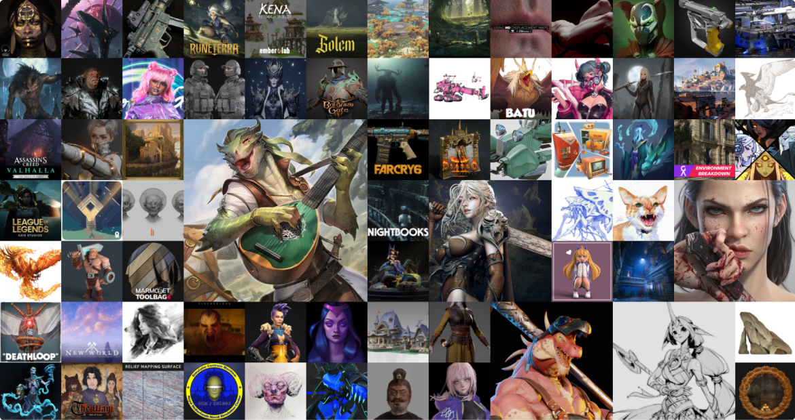
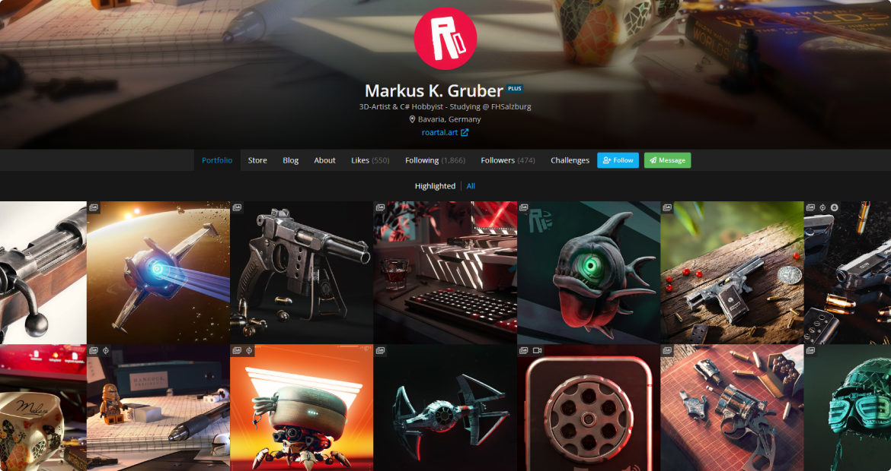

Карьера и зарплаты
3D-моделлеры востребованы, но у них высокая конкуренция — выше, чем у других специалистов, которые занимаются созданием визуальных эффектов. Это связано с тем, что многие хотят заниматься именно 3D-моделированием. Чем уже профиль — тем меньше конкуренция. К примеру, есть отдельный специалист, который создает причёски персонажей-людей или шкуры животных, грумер-артист. Их намного меньше, чем 3D-моделлеров. Поэтому когда открывают новый проект, на место грумера-артиста два человека, а на место 3D-моделлера — десять.
Куда пойти работать после обучения
- Можно устроиться в студию, которая разрабатывает игры или делает дизайны интерьеров. Правда, попасть туда будет очень сложно – слишком большая конкуренция. Этот вариант больше подойдет для специалистов высокого уровня.
- Найти аутсорс-студию и сотрудничать с ней на фрилансе (как вариант – устроиться в штат). Такие агентства обеспечивают 3d-шника постоянной работой по созданию объемных объектов. Доход тоже более-менее стабильный плюс нарабатывается необходимый опыт.
- Работать напрямую с заказчиками – этот путь больше подойдет для опытного уверенного в себе спеца. Начинающим моделлерам стоит остановиться на предыдущем способе заработка.
- Еще один вариант, как можно делать деньги на 3d-моделях – продавать их на специализированных маркетплейсах. Опытные и креативные специалисты могут зарабатывать больше 5 тысяч долларов в месяц на продаже персонажей и иллюстраций. Здесь же реально завести полезные знакомства и получить приглашение поработать над проектом.
Про 3D-стоки:
Разброс зарплат очень большой, во многом они зависят от сферы деятельности и опытности 3d-моделлера. В среднем в России доход специалиста по трехмерной графике в штате компании составляет от 50 тысяч рублей. В столичных фирмах такие работники могут рассчитывать на более высокий оклад – до 110 тысяч рублей. Стоит отметить, что во многих вакансиях нет обязательного требования к опыту: достаточно пройти обучение и набить руку.
Опыт, навыки
Уровень специалистов разделяют на Junior, Middle и Senior. Но сама оценка уровня расплывчатая, вам могут дать джуниора при опыте работы в 5 лет, за отсутствие определенных навыков или назвать вас Generalist, просто за способность расставлять модели в движке.
- Junior — Новичок. 3D художников, новичков без портфолио не берут, поэтому у вас должен быть минимальный опыт работы в 3D, в фрилансе или в инди. Людей с таким уровнем и без вас хватает, поэту найти работу будучи начинающим — большая удача.
- Middle — Наличие опыта работы в команде или в самостоятельных проектах, приблизительно больше года.
- Senior — Специалист с опытом в несколько лет, может смоделировать все, персонажи, пропсы, делает простые анимации, есть опыт работы с игровыми движками.
- Generalist — Человек оркестр. Работа начиная от концепта, заканчивая финальной сценой в игровом движке. Необходимы навыки работы с игровым движком, работа с шейдерами, анимациями, риггинг и скининг, скульптинг, моделинг, hard surface, текстурирование и оптимизация.
Портфолио
Чтобы найти работу по новой специальности, нужно быть активным, делиться своим творчеством на специальных площадках, откликаться на предложения работодателей. Даже начинающему 3d-модделеру могут предложить заказ, ведь работа крутого специалиста стоит в разы дороже.
Важным моментом является создание портфолио с лучшими проектами. Благодаря ему потенциальный заказчик сможет понять, насколько ваш уровень подходит для решения его задач, оценить потенц Наполнение убедительными кейсами может занять даже несколько лет, зато потом вы без труда найдете высокооплачиваемую работу. Ниже приведен пример портофлио художника на площадке Artstation:
Также сейчас многие люди используют социальные сети для своего продвижения, очень много крутых 3D-моделлеров выкладывают свои работы в Instagramm, что помогает некоторым с поиском работы, вот пример нескольких, на которых подписан я:
Не получается устроиться?
Долго пытаетесь устроиться на работу, но вас не берут? Как и в любой другой сфере, помимо отсутствия опыта или каких то навыков могут быть и другие причины отказа, даже мелочные.
- Из-за отсутствия опыта работы в офисе, даже если у вас большой опыт в фрилансе и хорошее портфолио. Опыт в офисе и на удаленке действительно может отличатся, так как есть социальное взаимодействие с коллегами.
- Отсутствие образования, художественного или высшего. У человека с художественным образованием, больше шансов продемонстрировать дизайнерское и креативное мышление.
- Личное восприятие. Многие работодатели при выборе сотрудников руководствуются теми же критериями, что и при выборе друзей. Личное неприятие может стать причиной для отказа.
Итоги
Не расстраивайтесь если вас не взяли на работу, делайте выводы, учитесь, получайте много разнпланового опыта, экспериментируйте. В процессе обучения можете возвращаться на наш сайт и использовать информацию отсюда, или же искать её самостоятельно, удачи!